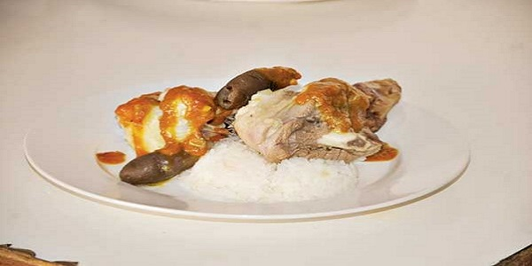

Thimpu
El Thimpu es un preparado de carne de cordero, papa, arroz, salsa a base de ají colorado, cebolla, arvejas y habas.
Ingredientes
- 1 pierna grande de cordero
- 1 Lb chuño mediano, remojado y pelado
- 1 taza de arroz
- 4 papas medianas
- 4 hojas de repollo
- 2 cebollas
- 2 zanahorias
- sesos de vaca (opcional)
- Sal
Preparación
1.Cortar en 4 trozos grandes las piernas de cordero y lavar. En una olla a presión con agua hirviendo, hacer cocer el cordero junto con una cebolla, las zanahorias enteras y sal al gusto. Dejar cocer durante una hora. 2.Transcurrido este tiempo, agregar los chuños enteros, partidos un poco con los dedos, previamente lavados varias veces y exprimiendo bien en cada lavada, hasta que el agua se aclare. Encima colocar las papas peladas enteras y las hojas de repollo antes lavadas. 3.Preparar el arroz blanco (khaja): En olla de aluminio, agregar el arroz sin lavar, vertir agua fría que lo cubra, hacer dar un hervor, luego escurrir el agua y lavar. Enseguida añadir dos tazas de agua fría, el resto de la cebolla y el ajo finamente picados, un chorrito de aceite, sal al gusto. Cuando el agua se vaya consumiendo, disminuir a fuego lento y aumentar de a poco agua caliente; dejar cocer hasta que el arroz reviente y se encuentre suelto. 4.El ají despepitado lavar y en batán o licuadora moler con poca agua, junto con la pimienta, el comino y el ajo, obteniendo una salsa espesa. 5.Para el ahogado: en una sartén con aceite caliente, saltear las cebollas picadas en forma pluma, una vez transparente, agregar la salsa de los condimentos molidos, un cucharón de caldo de cordero y dejar cocer durante quince minutos a fuego lento. El ahogado debe contener un poco de jugo. 6.Se sirve la presa de cordero, se rocía con el ahogado, se acompaña con una papa entera, chuño, arroz una hoja de repollo y los sesos de vaca, previamente cocidos al vapor. Posteriormente se sirve el caldo solo.